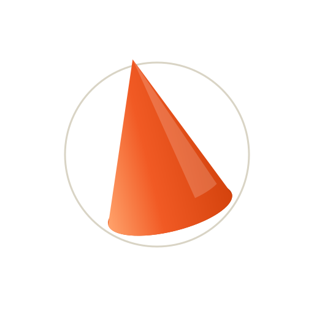

Brand kit. The Signal Cone, two worlds, one accent. Open BRAND_SITE_GUIDE.md for the full execution spec.
Ratio law: light 60/30/10, dark 70/25/5. Orange is the only accent on the entire site, in either world.

Primary / lightRotations run 90 to 140 seconds so nothing ever syncs. The cone is the only colored shape, anywhere, ever. Under prefers-reduced-motion, everything above is static.